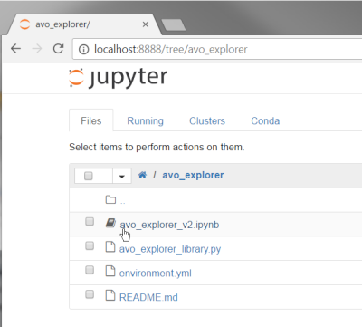
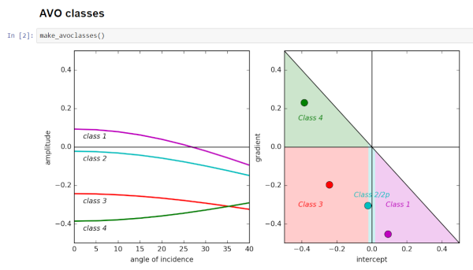
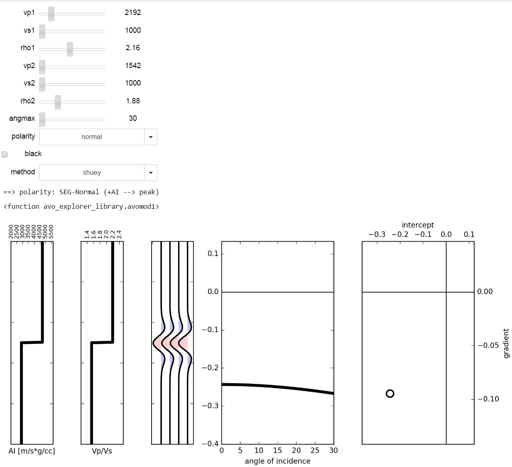
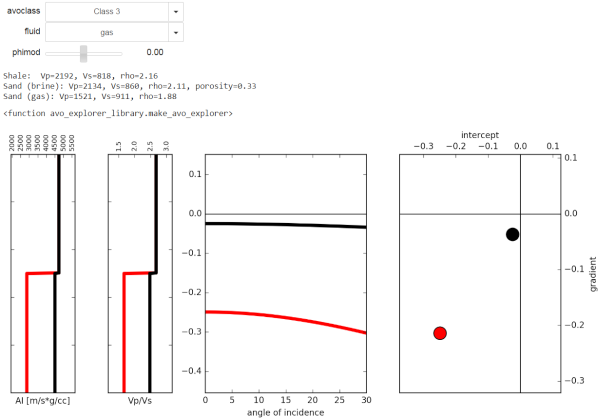

AVO Explorer
Interactive tool to explore AVO classes.
Written in Python, delivered via Jupyter. Uses the standard scientific Python libraries plus Agilegeo’s bruges geophysical library.
To launch the interactive notebook click this button:

How to use it
If you need a more complete introduction to Jupyter notebooks, see here.
Otherwise, read on.
The first thing you’ll see after you click on the Launch Binder button is this window, a sort of file manager to open notebook documents, text file etc (it’s called the Notebook Dashboard):

Click on the avo_explorer_v2.ipynb to start the notebook.
Now From the menubar select Cell/Run All to have everything ready to run; to clean up the window and make more space, select View/Toggle Header and View/Toggle Toolbar.
The first interesting cell you will see is this one:

The plot with the AVO classes is the output of the function make_avoclasses(). There’s not much to it really, just a reminder what AVO is all about.
Let’s scroll down until you get to to the Interactive AVO explorer:

This is the output of the function avomod1 made interactive through Jupyter’s magic. It computes the AVO response along an interface between two layers. Each media is characterised by its elastic properties (P-wave, S-wave and density); the upper layer is specified by vp1, vs1, rho1, the lower by vp2, vs2, rho2.
Play with the sliders to change the elastic properties of the two layers and see the resulting AI (acoustic impedance, vp*rho) and Vp/Vs curves, the AVO curve, a synthetic seismic gather and the AVO response on the Intercept/Gradient crossplot. You can also change the equation to be used (Zoeppritz or Shuey 2-term), the maximum angle of incidence, polarity of the data and finally to have the gather displayed in black (activating the checkbox) or in red/blue colors.
Scroll further down to play with the Interactive AVO classes explorer:

This is generated with the function avomod2 and can be used to inspect predefined configurations of shale/sand scenarios that represent the classic four AVO classes; what you can also do is choose the fluid content of the lower (sandy) layer and also modify its porosity with the slider phimod which allows to add or subtract up to 0.1 p.u. from the starting point (indicated in the text between the sliders and the plots).
If it doesn’t work for you, too bad! I’ve created this only as a demo for some of my colleagues and release it for the rest of the world with no promises that it will work for you too. If you think there’s something to be fixed or missing go to the original github repo, make your changes and then share it back.